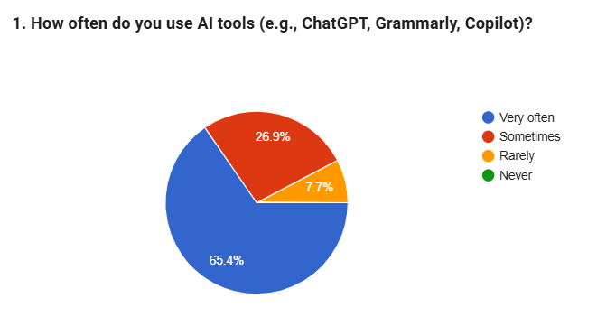
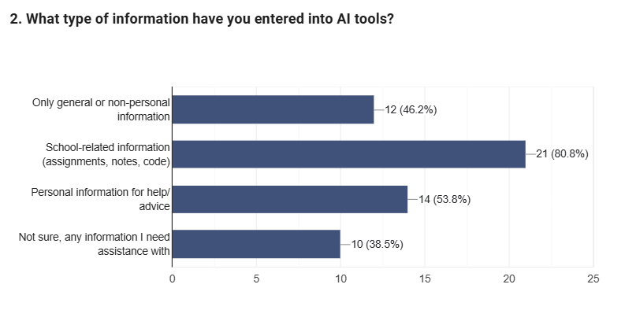
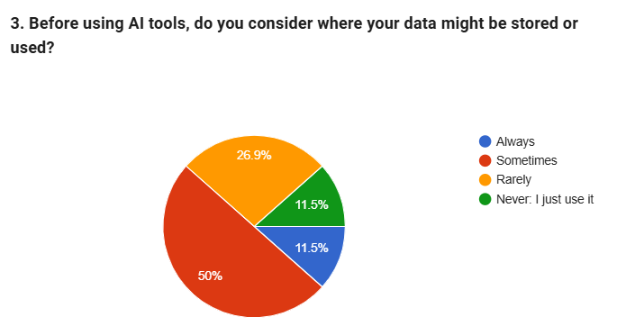
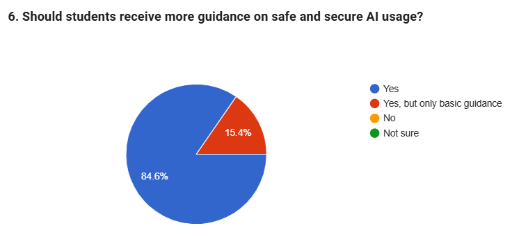

Survey Results
This section presents findings from a student survey examining AI usage patterns, awareness of data privacy, and perceptions of security risks when using AI tools.
How Often Students Use AI Tools
Understanding how embedded AI tools are in daily academic use
The majority of respondents (65.4%) reported using AI tools very often, with an additional 26.9% using them sometimes. This shows that AI tools are not used occasionally, but are instead a regular part of students’ academic workflows.
High usage frequency increases the potential impact of privacy or security risks, especially when AI tools are used repeatedly without careful consideration.
Types of Information Entered into AI Tools
What students are actually sharing with AI systems
Most respondents (80.8%) reported entering school-related information such as assignments, notes, or code into AI tools. More than half (53.8%) also indicated that they have entered personal information when seeking help or advice.
Although this information may not always seem sensitive, repeated or detailed inputs can still raise privacy and data security concerns.
Consideration of Data Storage Before Using AI
Do students think about where their data goes?
Only a small portion of respondents (11.5%) reported always thinking about where their data might be stored or used. Half of the respondents said they sometimes consider it, while the remaining respondents rarely or never do.
This suggests that awareness exists, but it is inconsistent and often not applied during everyday AI usage.
Confidence in AI Security and Data Practices
When asked about confidence in how AI tools protect user information, half of the respondents reported being not very confident, while others described themselves as only somewhat confident. Very few respondents expressed strong confidence in AI data security.
Similarly, while some students were aware that AI tools may store or review user data, many reported being only somewhat aware rather than fully informed.
These results highlight uncertainty rather than trust, suggesting a gap between AI usage and understanding of data protection practices.
Awareness of Risks vs Continued AI Use
Despite recognizing potential privacy or security risks, a majority of respondents (65.4%) reported continuing to use AI tools for assistance. This indicates that convenience and academic usefulness often outweigh security concerns.
Awareness alone does not appear to significantly change behavior when AI tools are perceived as helpful or necessary.
Need for Guidance on Safe AI Usage
Student attitudes toward AI education and support
An overwhelming majority of respondents (84.6%) agreed that students should receive more guidance on safe and secure AI usage. The remaining respondents felt that at least basic guidance should be provided.
This finding strongly supports the need for clearer education, policies, or resources focused on AI privacy and security rather than discouraging AI use.
Summary of Findings
Overall, the results show that students frequently rely on AI tools and often share academic or personal information, while their understanding of privacy and security practices remains inconsistent. Although many students recognize potential risks, they continue to use AI due to its convenience and usefulness. The strong demand for guidance highlights the importance of improving AI privacy and security education.